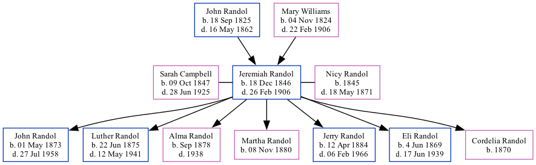

Jeremiah Smith Randol 1846 - 1906
[ Home ] | [ Surnames Index ] | [ Family History ]The eldest of 3 children of John Randol and Mary Williams, was born in Cape Girardeau, Cape Girardeau, Missouri, USA on Dec 18, 18461,2,3,4 and was married twice - to Sarah Campbell (on May 11, 1872 in Cape Girardeau County, Missouri, USA) Nicy Randol5. He had 7 children: Eli Green and Cordelia E with Nicy Jane; and John Robert, Luther Jackson, Alma Burl, Martha Elizabeth and Jerry S with Sarah Emeline.
During his life, he was living in District 14, Cape Girardeau, Missouri in 18501; at his birthplace in 18602; and in Cape Girardeau, Cape Girardeau, Missouri in 19003.
He died on Feb 26, 1906 in Cape Girardeau4 (age at Death: 59) and was buried in Jackson, Missouri after Feb 26, 19064.
Parents
- John Green was born on Sep 18, 1825
- Mary Jane was born on Nov 4, 1824
Children
- John Robert was born on May 1, 1873
- Luther Jackson was born on Jun 22, 1875
- Alma Burl was born in Sep 1878
- Martha Elizabeth was born on Nov 8, 1880
- Jerry S was born on Apr 12, 1884
- Eli Green was born on Jun 4, 1869
- Cordelia E was born in 1870
Citations
- 1850 United States Federal Census Ancestry.com Operations, Inc. (Age: 5)
- 1860 United States Federal Census Ancestry.com Operations, Inc. (Age in 1860: 13)
- 1900 United States Federal Census Ancestry.com Operations Inc (Age: 53; Marital Status: Married; Relation to Head of House: Head)
- Web: Missouri, Find A Grave Index, 1812-2011 Ancestry.com Operations, Inc.
- Missouri Marriage Records, 1805-2002 Ancestry.com Operations, Inc.
Family Tree
Data (GEDCOM) maintained by Jay Weston Hannah, Omaha, Nebraska, USA.
Website generated by ged2site. Last updated on Jun 18, 2024.